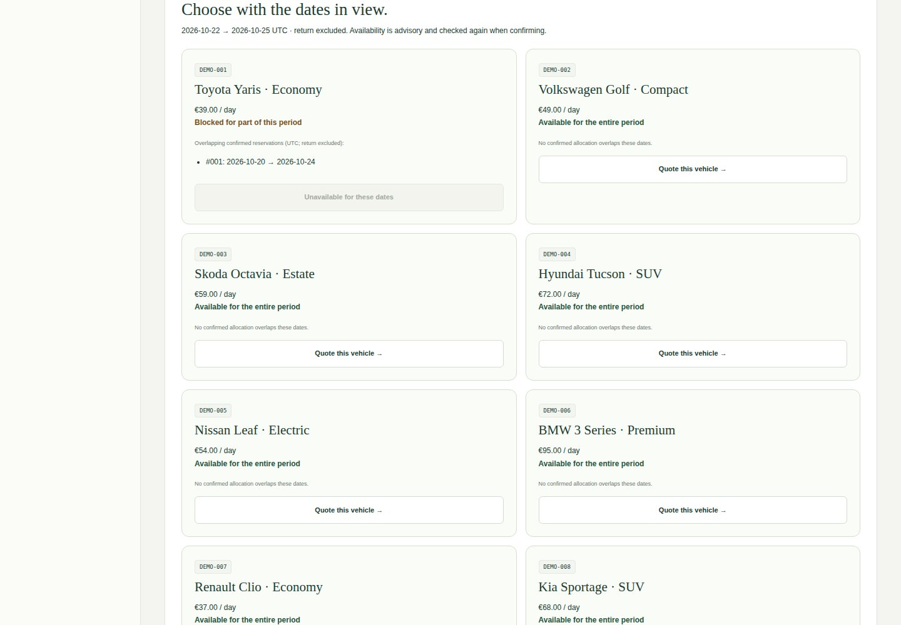
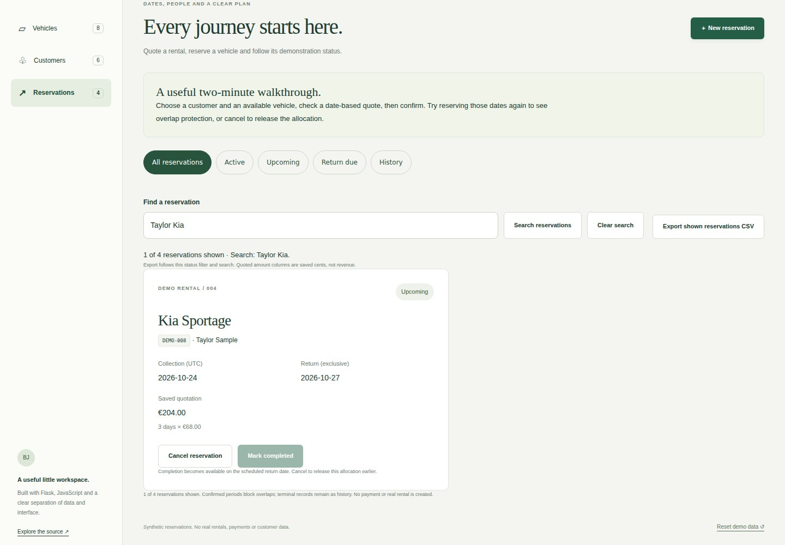
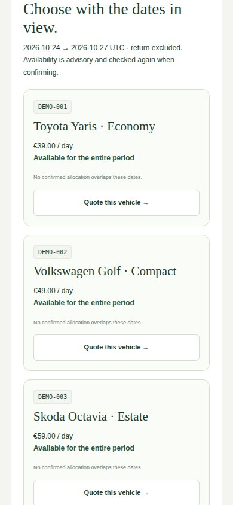
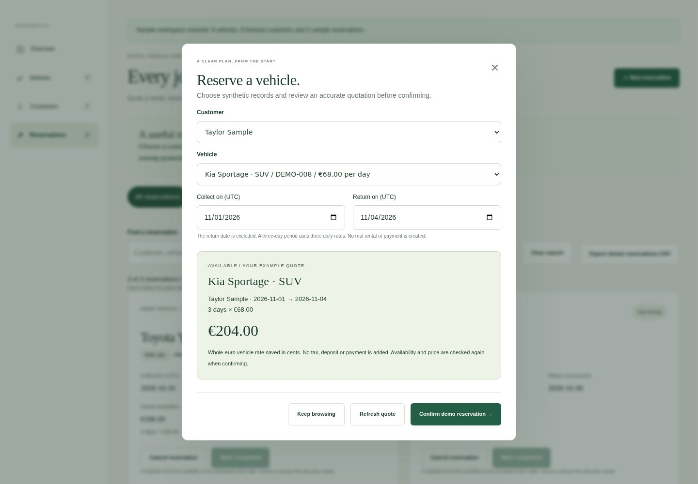
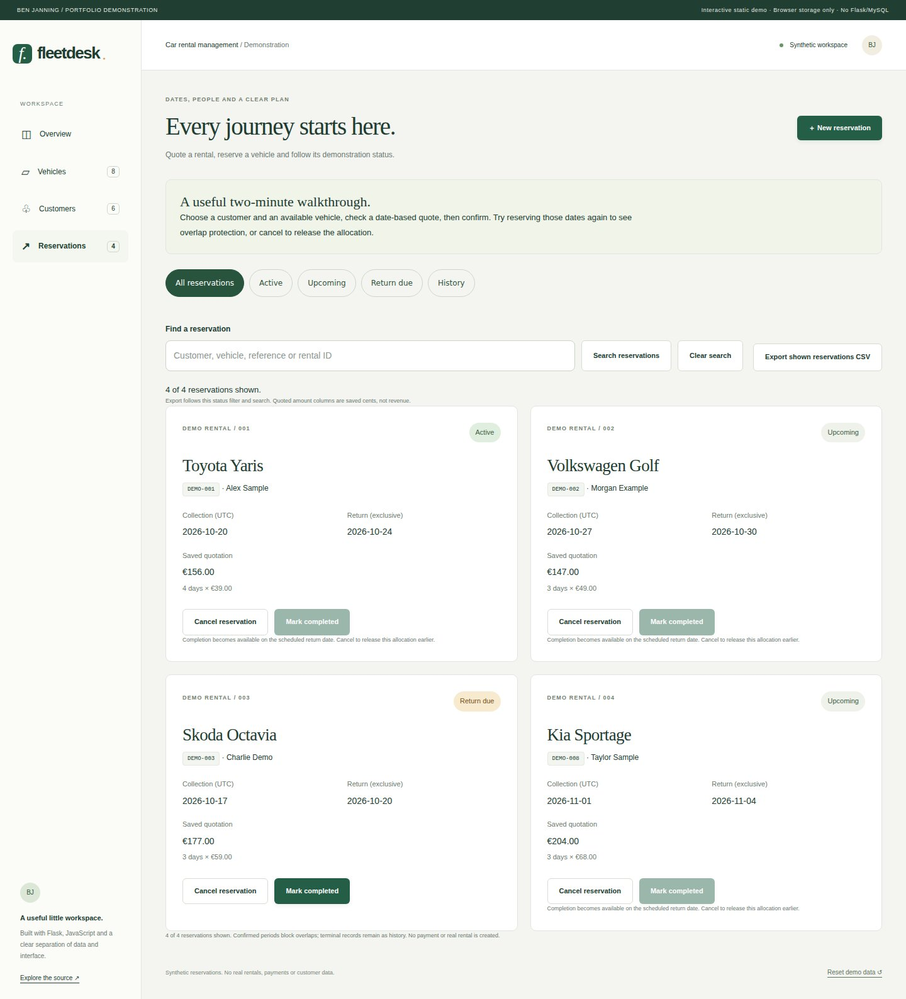

Fleetdesk rental management.
See which vehicles fit a rental period, quote and allocate safely, then search and export the saved reservation records.
Public demo: browser-managed synthetic data. The Flask/MySQL implementation is available separately in the source.

What I built
Turned the rental overview into a vehicle-level decision workspace: explain blocking periods, preselect an available vehicle into the tested quotation flow, and search/export exactly the shown historical snapshots.
Why it matters
A rental workspace must prevent two customers from being promised the same vehicle for overlapping dates, and keep the reviewed price clear when records change.
How it works
- 01
Choose dates and inspect each vehicle’s advisory availability, including actual confirmed periods that block it.
- 02
Quote an available vehicle with its dates already selected; confirmation retains the tested allocation and price rechecks.
- 03
Combine reservation status filters with snapshot search, then export exactly the displayed records and saved integer-cent quotations.
The technical challenge
An availability count does not tell a user which vehicle to choose. The roster makes the existing allocation rules inspectable without becoming a second source of truth. Booking starts with a preselected vehicle/period, but still rechecks the transaction. Search and CSV exports use preserved reservation snapshots, so current customer edits cannot silently rewrite history or quoted totals.
What it demonstrates
Business workflow design, transactional allocation, accessible decision support, data integrity and independently verified record exports.
Evidence, with context.
Existing record workflows and new rental workflows pass API/domain, browser-rule and full browser checks before this release. The isolated MySQL integration verifies simultaneous overlap rejection, retry identity, saved prices, referential integrity and state transitions. Desktop/mobile captures match this exact source revision; the linked run records its actual result.
Verified source: ac3616443170 · Tests and visual capture ↗








Scope and limitations
Synthetic educational application, with no real fleet, payments, tax/deposit calculation or deployed multi-user backend. The public demo is local to one browser profile and uses Web Locks to coordinate its tabs; it cannot allocate across devices. UTC dates use an exclusive return date. Early-return pricing, rental amendments and deletion of referenced history are outside scope. MySQL allocation safety assumes writes use the transactional service.
Visual provenance and source attribution are recorded in the evidence register ↗.
Under the surface.
Architecture, methods and improvements
Separate pure rental rules, memory/MySQL adapters and a presentation module preserve original CRUD routes. Python and JavaScript follow a 27-case rules contract. Memory uses a shared RLock; browser writes use an exclusive Web Lock and fresh storage read; MySQL confirmation locks the vehicle/customer rows in a transaction and preserves references with foreign keys. Request IDs prevent duplicate creation after a lost response. Integer-cent rate and name snapshots preserve quoted terms; stale rates require a new quote. The read-only availability roster delegates to those existing rules. Snapshot search and CSV formatting are isolated presentation helpers, independently checked with Python CSV parsing. Eleven browser journeys cover both Flask/static frontends, exact exports, keyboard focus and mobile decisions; all original MySQL contention checks remain.
Try it locally
Install requirements.txt; set DEMO_MODE=1 and run python CarServer.py. The README documents the non-destructive MySQL reservation migration and opt-in isolated integration checks. The public static demo shares its frontend and tested rules contract.
The portfolio is a static GitHub Pages site. Server applications run locally; the portfolio does not collect bookings, credentials or payments.